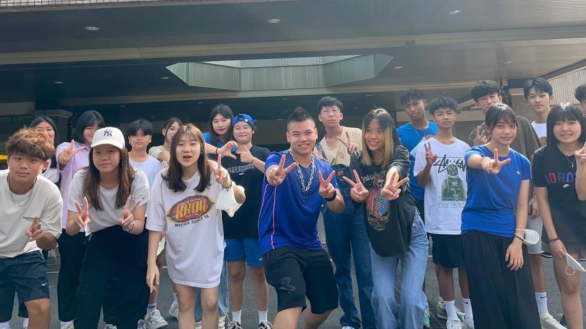
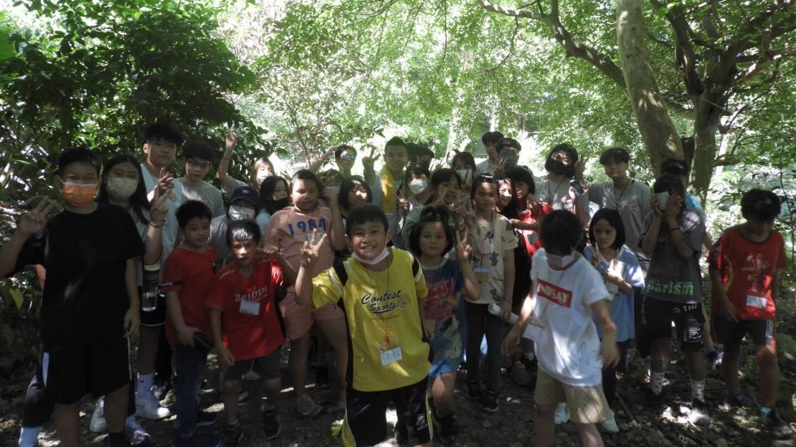
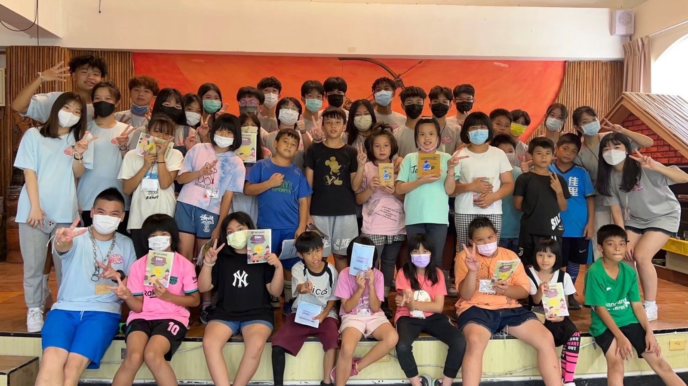
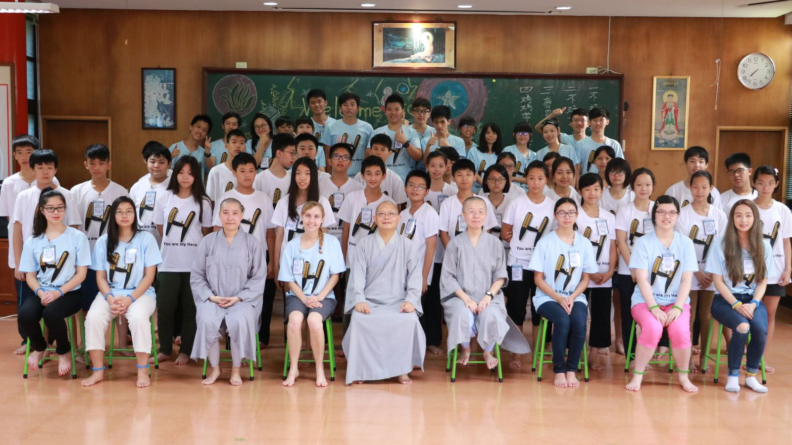
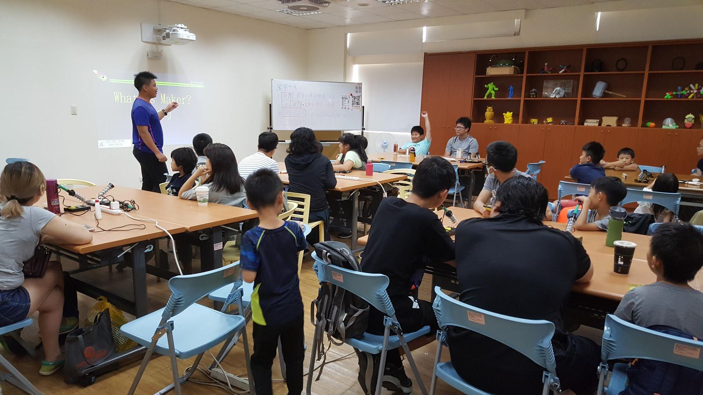
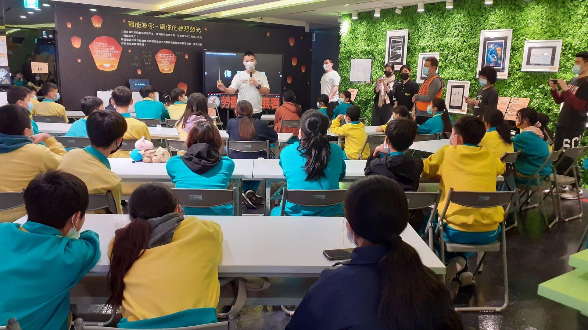

Taiwan’s education system can keep a student in school and cram programs for up to 14 hours a day, and it still leaves rural students with fewer extracurricular options than their city peers. Homeschooling had given me a customized education; Soft Skills Union was an attempt to share some of that.
From 2018 to 2022 the team fundraised for and hosted two summer camps a year for rural students — bilingual, hands-on STEAM programs designed and run by students. “We strive for an environment where every child has a voice and the ability to achieve their full potential.”




Since 2013 I’ve been invited to speak and run workshops at schools and universities including Taoyuan Municipal Neili Junior High, Wulin Elementary, Aletheia University and Tamkang University — on self-study, language learning, cultural exchange, IoT and technology, teamwork and time management.


“It has touched us that high schoolers would have the initiative to serve and give back to the community — the Soft Skills Union team has visited our camps several times and are capable, independent teenagers.”